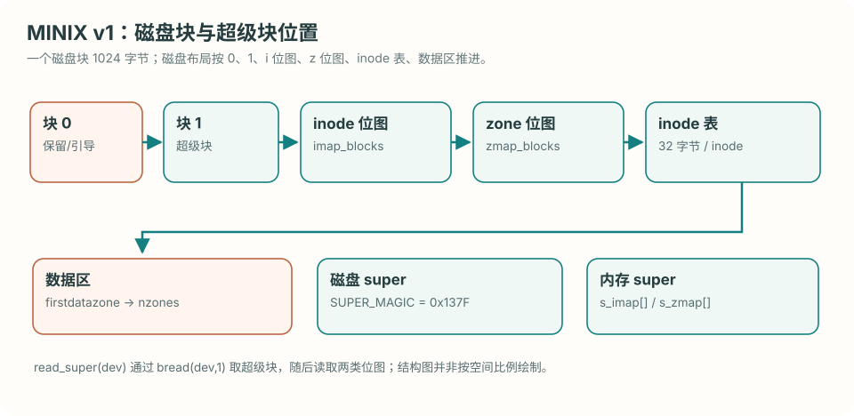
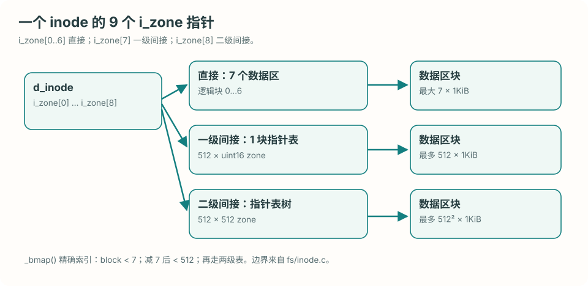

MINIX 文件系统：超级块、位图与九个磁盘区指针
从磁盘上的 1KiB 块布局、32 字节 inode 和分层间接寻址出发，沿 read_super、read_inode、new_block 理解持久化元数据。
MINIX v1 · 1024B · inode/zone为什么 inode 号不能直接指向文件内容？
目录项只有一个 inode 编号和短文件名。文件系统必须先用编号找到磁盘 inode，再根据 i_zone[] 找到该文件实际占用的数据块。如果一个文件变大，连续分配的磁盘块可能不够；MINIX 风格磁盘格式通过“直接区号 + 一级/二级间接区号”解决。
这里的所有数值都限定于 Linux 0.11 使用的 MINIX v1 磁盘布局：每块 1024 字节、磁盘 inode 32 字节、文件名最多 14 字节。这不是现代 Minix v3 或 ext4 结构。

superblock 和位图为何必须有固定位置
磁盘块 0 预留，块 1 保存 struct d_super_block；从块 2 起，连续放 s_imap_blocks 个 inode 位图块，再放 s_zmap_blocks 个数据区位图块；之后才是固定大小 inode 表和实际数据区。每一个位图块拥有 1024×8=8192 个位，所以要先知道位图块数，才能准确找到后续 inode 表起点。
struct d_super_block {
unsigned short s_ninodes, s_nzones;
unsigned short s_imap_blocks, s_zmap_blocks;
unsigned short s_firstdatazone, s_log_zone_size;
unsigned long s_max_size;
unsigned short s_magic;
};s_magic=0x137F 是这个历史格式的标识。s_log_zone_size 表示 zone 大小相对于 1KiB 块的移位量，不是“日志（journaling）块大小”；旧文把 log 理解为日志会凭空引入 0.11 并不具有的日志文件系统机制。
两个 imap 块理论上提供多少位？（展开核对）
2×1024×8=16384 位。但 inode 编号、保留位和超级块声明的 s_ninodes 共同限制有效编号，不能把 16384 直接说成该卷有 16384 个有效 inode。
read_super 的磁盘读取与内存缓存
fs/super.c 定义在内存里的 super_block[NR_SUPER]，NR_SUPER=8。read_super(dev) 先查已有缓存和设备变化，再申请空闲槽；bread(dev,1) 从块 1 获取磁盘超级块，并把 d_super_block 的公共字段复制到内存 super_block 前部，检查 SUPER_MAGIC，继续把 inode/zone 位图块缓存进 s_imap[]/s_zmap[]。
if (!(bh = bread(dev,1))) { ... }
*((struct d_super_block *) s) =
*((struct d_super_block *) bh->b_data);
brelse(bh);
if (s->s_magic != SUPER_MAGIC) { ... }注意 struct super_block 比磁盘结构更大：它还包含内存里的 s_dev、s_wait、s_lock、s_isup、s_imount 和缓存头指针。这些运行时指针并不会按原样写入磁盘超级块。
为什么 32 字节磁盘 inode 有 9 个 i_zone
include/linux/fs.h 中，struct d_inode 包含 i_mode、i_uid、i_size、i_time、i_gid、i_nlinks 和 i_zone[9]。其磁盘结构总计 32 字节，故一块 1024 字节可以容纳 32 个 inode；内存的 struct m_inode 再额外保存缓存引用数、锁、管道/挂载标记等运行时信息。
九个 16 位区号的角色不是九个普通数据块：zone[0..6] 指向 7 个直接块；zone[7] 指向一个一级间接块，最多保存 512 个 16 位区号；zone[8] 指向二级间接块，可容纳 512×512 个目标区号。

if (block >= 7+512+512*512)
panic("_bmap: block>big");
if (block<7) {
/* inode->i_zone[block] */
}
block -= 7;
/* 接下来处理 512 个一级索引 */逻辑块编号 7 走哪一条映射？（展开核对）
0–6 为 7 个直接块；编号 7 在扣除 7 后变成 0，使用 i_zone[7] 的第 0 个一级间接索引。
磁盘 inode 号是如何转成块号的？
fs/inode.c 的 read_inode() 计算磁盘块号：
block = 2 + sb->s_imap_blocks + sb->s_zmap_blocks +
(inode->i_num-1) / INODES_PER_BLOCK;其中 INODES_PER_BLOCK=1024/32=32。从 inode 编号减 1，是因为编号从 1 起，而数组偏移从 0 起。随后 bread(inode->i_dev,block) 读取缓存，选择 (i_num-1)%32 的磁盘 inode 记录复制到内存对象。这样，磁盘 inode 位于哪个块和块内哪个 32B 槽就都是可计算量，不需要假设固定的物理内存地址。
INODES_PER_BLOCK = 32
inode_no = 65
disk_block = 2 + 1 + 1 + (inode_no-1)//INODES_PER_BLOCK
slot = (inode_no-1) % INODES_PER_BLOCK
print(disk_block,slot) # 6,0上例是指定参数下的离线算术，不是从实际 MINIX 镜像中读出的编号或 inode 内容。
bitmap.c 才是 new_inode/new_block 的真实位置
旧教程将 new_inode(int dev) 的实现和位图读取混成虚构循环。原版 fs/bitmap.c 中，new_inode 与 new_block 使用 find_first_zero 从已经缓存的位图缓冲区寻找空位，set_bit 标为已使用，再令相关 bh->b_dirt=1。分配数据块后还通过 getblk 取得缓冲区，把数据块清零并标记有效/脏。
free_inode(struct m_inode *) 不是 free_inode(dev,inr) 这个旧文虚构的签名；释放时还要检查 inode 的 i_count 和 i_nlinks。对于已经有多个缓存引用或仍有硬链接的 inode，不能仅凭一个 inode 号清掉位图。free_block(dev,block) 也必须在已分配的数据区范围内操作，并防止关联缓存块仍被多方引用。
if ((j=find_first_zero(bh->b_data))<8192)
break;
/* 分配 zone bitmap 的第 j 位 */
j += i*8192 + sb->s_firstdatazone-1;mount_root 与一般挂载如何衔接
在启动路径中，mount_root() 初始化文件对象表，读取根设备超级块，并用 iget(ROOT_DEV,ROOT_INO) 获取根 inode，随后让任务 1 的 root/pwd 指向它。一般挂载时，sys_mount 需要将设备超级块与挂载目录 inode 绑定；路径解析会根据 i_mount/s_imount 处理跨挂载点的路径。
读取超级块、取得根 inode 和修改任务路径上下文，是三个连续但不能混同的步骤。这说明 mount 不是“把某个磁盘复制到某个目录”。
检查磁盘结构和源码链路
grep -n 'struct d_super_block\|struct d_inode\|SUPER_MAGIC' include/linux/fs.h
grep -n 'read_super\|mount_root\|sys_mount' fs/super.c
grep -n 'INODES_PER_BLOCK\|_bmap\|read_inode' fs/inode.c
grep -n 'find_first_zero\|new_inode\|free_inode\|new_block' fs/bitmap.c预期能够跨四个文件验证：磁盘格式、挂载关系、区号寻址、位图分配。没有实际提供文件系统镜像时，不应宣称已读取到某个磁盘超级块或修复过坏块。
原始证据与下章入口
- include/linux/fs.h：MINIX 的磁盘和内存结构。
- fs/super.c：read_super、mount_root。
- fs/inode.c：_bmap、read_inode。
- fs/bitmap.c：inode/zone 位图分配与回收。
有了 inode 号和磁盘块，接下来还需要回答：用户输入的 /usr/bin/sh 怎样穿过目录项并变成一个 inode 和文件描述符？